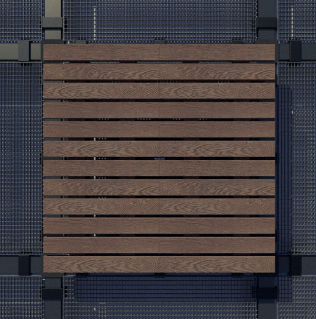
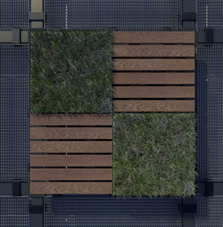
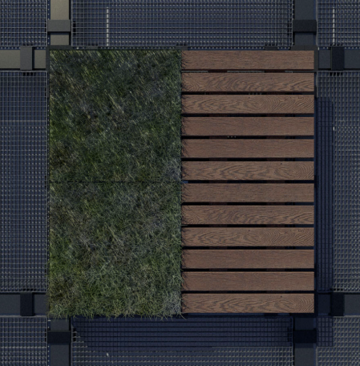
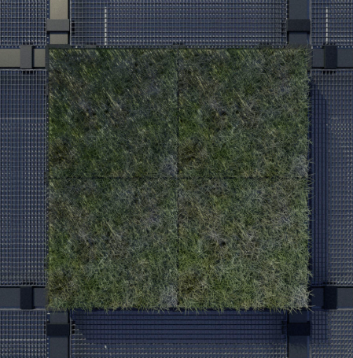
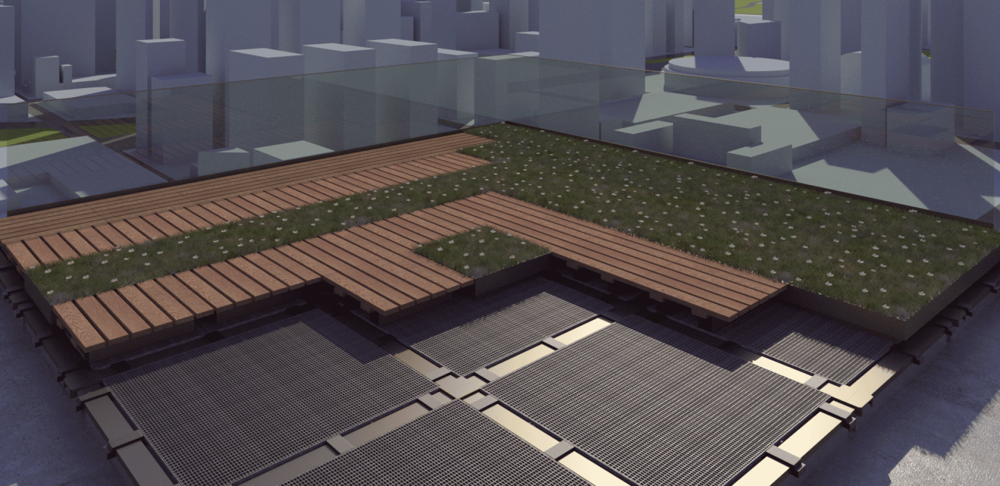

The Heritage Studies Center is dedicated to research, scientific and technological development and commercialization of technological solutions in the areas of engineering, architecture, construction and energy.
We provide design, consulting and monitoring services in the areas of engineering, architecture, energy, construction and rehabilitation of buildings.
We support companies and scientific entities in the conception and development of research and technological development projects for the AEC sector (Architecture, Engineering and Construction).
The European Parliament's Boosting Building Renovation: What Potential and Value for Europe? - estimates that the potential for building rehabilitation in Europe is enormous - about 110 million buildings need rehabilitation - adding that an intensive rehabilitation effort to increase energy efficiency would provide 80% savings in final energy use by 2050, compared to 2012 figures.
Finally, he estimates that the critical factor in the cost of this intervention in the European building stock will be the cost of labor. This data supports the urgency of projects such as PROJECT ADAPTIVE, which proposes to develop a technological solution to increase energy efficiency without the need for skilled labor.
On the other hand, a study by 360 Market Updates - Prefabricated Building System Market - Growth, Trends, and Forecast (2019 - 2024), May-2019 - points to a prefabricated building market growth of 5.9% per year between 2019 and 2024.
Project ADAPTIVE
Advanced Manufacturing System for Sustainable and Productive Roof Rehabilitation
Research for
Productivity
Sustainability
Water use
Research for Sustainability
Advanced manufacturing for the rehabilitation of building roofs that will allow the reduction and potential elimination of the cumulative environmental impact of its production chain, substantially increasing productivity for the construction industry.
Research for Productivity
A composite solution for the rehabilitation of flat roofs on current buildings, a completely prefabricated solution that generates zero waste, materialized by biological polymers and synthetic polymers derived from the waste of other industries.
Efficient Use of Water
Aiming to increase the energy performance of the building by collecting and storing rainwater, and foreseeing the use of the roof area as a landscaped leisure space, integrated with equipment for autonomous electric energy production.





The Center for Heritage Studies identifies the following as trends for technological development in the construction industry:
- application of information and communication technologies in the integration and rationalization of production chains;
- increasing prefabrication and automation;
- growing importance of life cycle assessment of products and processes in construction.
Therefore, we have implemented an R&D&I (Research, Development and Innovation) strategy focused on the development of physical technological solutions for the growing instillation of prefabrication in the rehabilitation of buildings, leveraged by the integration with supporting ICT, and always evaluated in competition with the notions of global ecological impact of production processes.